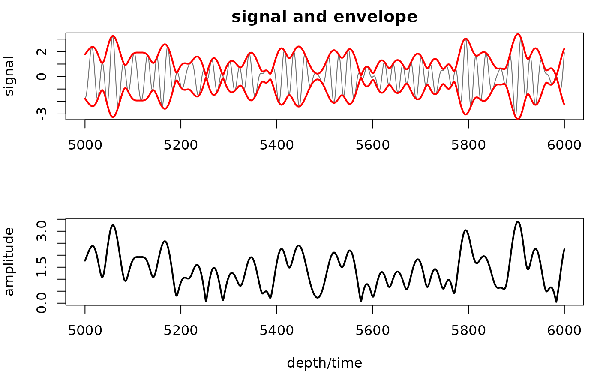
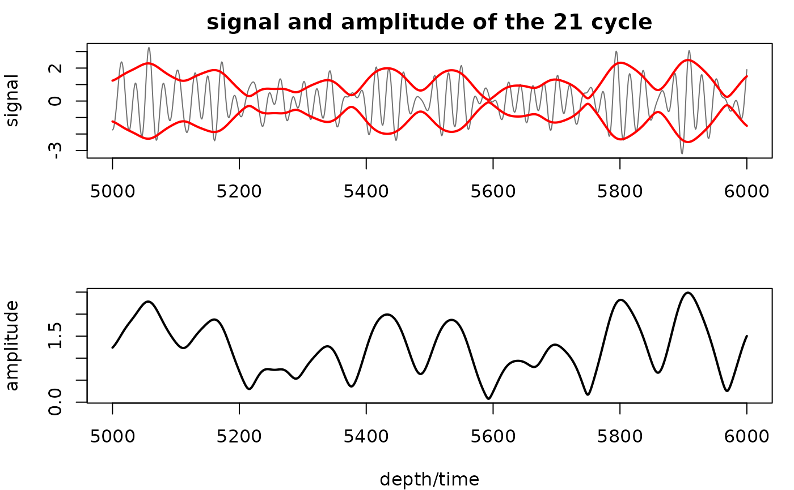
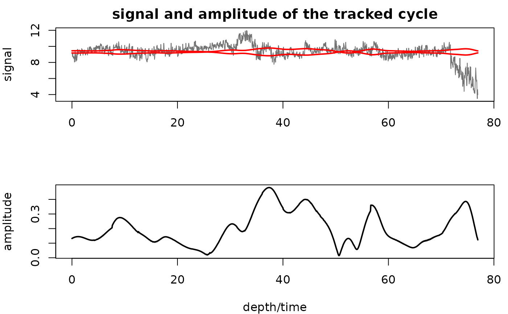

Extract the instantaneous amplitude (envelope) of a signal using the CWT
Source:R/extract_amplitude.R
extract_amplitude.RdThe wavelet equivalent of the Hilbert transform. A complex (analytic) Morlet wavelet is used, so the wavelet coefficients already are the analytic representation of a real signal; summing them back up gives the analytic signal \(z(t)\) whose real part is the input and whose modulus is the instantaneous amplitude.
Called with only a signal, it returns the envelope of the whole record and behaves like a Hilbert transform (median ratio 1.000 on a ZB18a eccentricity window), but computed scale by scale, so a period range can be imposed and the ends of the record do not have to be wrapped around.
Given cycle, it instead returns the amplitude of that one cycle: the
analytic signal is rebuilt only from the scales inside band around the
given period, so other cycles, noise and trends do not enter the amplitude.
This is the amplitude-modulation curve used in cyclostratigraphy.
Calibration is absolute in both modes, with no rescaling against peak statistics: a signal of constant amplitude 3 returns 3, independent of dt, dj, omega_nr and the scale range. In whole-record mode the reconstruction constant is fixed by requiring \(\mathrm{Re}(z)\) to reproduce the input; in cycle mode it is the analytic response of the wavelet family to a unit cosine at the cycle's frequency.
Arguments
- signal
Input series (matrix or data frame: depth/time in column 1, proxy value in column 2). Rows with
NAare removed, the rows sorted and the series linearly interpolated to its median sample spacing. Required (Default=NULL).- cycle
What to measure the amplitude of:
NULL: the whole signal, i.e. the Hilbert-equivalent envelope;a single number: the cycle of that period, in the depth/time unit of
signal(e.g.cycle = 405for kyr data);a two-column matrix or data frame (depth/time, period): a tracked period curve, e.g. from
track_period_wavelet+completed_series, for records whose sedimentation rate varies (linearly interpolated to the depth/time axis);"ridge": follow the strongest cycle (maximum wavelet modulus) at each depth (only for records dominated by one cycle).
Default=NULL.- band
Period band kept around
cycle, as factors of its period (numeric vectorc(low, high), > 0, e.g.c(0.5, 2)keeps periods from half to twice the cycle period). Narrow it (e.g.c(0.8, 1.2)) for noisy records or cycles close together; a wide band is needed when the cycle is strongly modulated. Ignored whencycle=NULL.Default=c(0.5, 2).- periods
Period range of the wavelet transform,
c(lower, upper)in the depth/time unit ofsignal(numeric, upper > lower; anNAelement keeps its default).NULLuses2 * dtto half the record length; for a single-numbercyclethe range is widened if needed to contain the band. Use it to keep noise or a trend out of the whole-record envelope, or to stopcycle="ridge"wandering.Default=NULL.- omega_nr
Number of cycles in the Morlet wavelet (numeric, >= 5 keeps it analytic; smaller values give a warning and biased amplitudes). Larger values give a better period resolution but a poorer depth/time resolution.
Default=6.- dj
Spacing between successive scales, in octaves (numeric, > 0); smaller values give more scales and a longer computation time.
Default=1/100.- pad
Treatment of the record ends before the transform (character):
"AR"extends the record with a forward/backward autoregressive (linear prediction) forecast so that the wavelet does not see a step to zero,"reflect"mirrors it,"zero"is the classic zero padding."AR"falls back to"reflect"(and then to"zero") if the fit fails.Default=c("AR", "reflect", "zero"), i.e."AR".- mask_coi
Set the amplitude to
NAinside the cone of influence (logical, TRUE or FALSE).Default=FALSE.- genplot
Plot the signal with its +/- envelope (top) and the amplitude (bottom) (logical, TRUE or FALSE).
Default=FALSE.- ver_results
Print the median ratio of the CWT amplitude to the FFT Hilbert envelope outside the cone of influence, as a check (logical, TRUE or FALSE).
Default=FALSE.- keep_editable
Keep the plot layout (two panels) active after the call so that the plot can be edited or added to (logical, TRUE or FALSE);
FALSErestores the previous graphical parameters.Default=FALSE.- ...
Old argument names of earlier versions, mapped onto the new ones where possible:
tracked_cycle_curve(withextract_cycleandtracked_cycle_period) andextract_cycletocycle,lowerPeriod/upperPeriodtoperiods,period_down/period_uptoband;pts,remean,add_mean,waveletandmethodare ignored with a message.
Value
Matrix, column 1 = depth/time, column 2 = amplitude. In cycle mode
the period actually used is attached as attr(x, "period").
Examples
# \donttest{
# envelope of the whole record - nothing else to set (insolation-like signal, time in kyr)
amp <- extract_amplitude(astrosignal_example, genplot = TRUE)

# amplitude of one cycle only: the precession band (~21 kyr) of the example signal;
# its amplitude is the eccentricity modulation
amp21 <- extract_amplitude(astrosignal_example, cycle = 21, band = c(0.75, 1.35),
genplot = TRUE)

# depth domain with a varying sedimentation rate: hand it the tracked 405-kyr period curve
# (magnetic susceptibility of Pas et al. 2018, tracked 405-kyr cycle in metres)
mag_wt <- analyse_wavelet(mag, dj = 1/100, lowerPeriod = 0.1, upperPeriod = 254,
verbose = FALSE, omega_nr = 10)
mag_track <- completed_series(wavelet = mag_wt, tracked_curve = mag_track_solution,
period_up = 1.2, period_down = 0.8, extrapolate = TRUE,
genplot = FALSE)
amp405 <- extract_amplitude(mag, cycle = mag_track, band = c(0.8, 1.25), genplot = TRUE)

# }